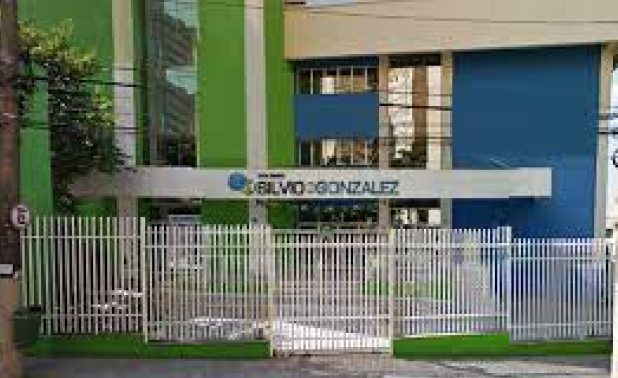
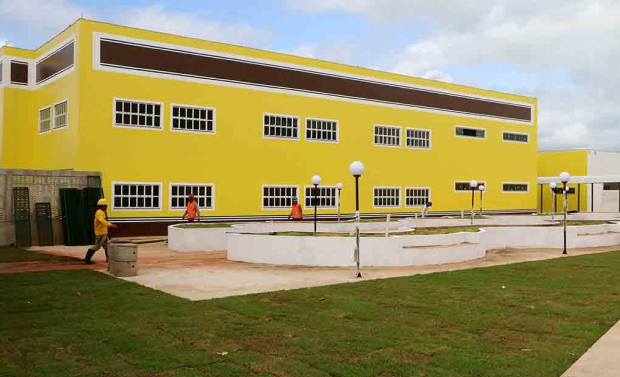

Educação
Quem mora no bairro do Limão pode contar ainda com uma excelente estrutura de educação. Importantes instituições de ensino da rede particular estão instaladas na região, atendendo desde o ensino infantil ao ensino médio. Além da rede particular, o bairro também conta com mais de 10 unidades escolares da rede pública. O bairro abriga escolas particulares como o Colégio Freitas Moura, Nova Época, Irei, Dom Bosco – Aquarelinha e Colégio Padre Moye. E escolas públicas como a Professor Luiz Gonzaga Righini, Escola Professora Angelina Madureira, Antoine de Saint Exupéry, Professora Dulce Ferreira Boarin e Joaquim Nabuco.

Colégio Padre Moye
Esse foi um dos colégios mais antigos do bairro, se tornando muito importante para a história

Outras escolas no bairro:



